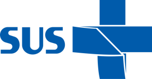
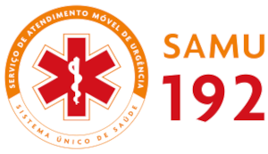

A sigla SUS significa Sistema Único de Saúde. É o sistema público brasileiro de saúde criado pela Constituição de 1988. Ele é responsável por garantir atendimento gratuito e universal para toda a população do Brasil, englobando desde ações preventivas básicas até transplantes de alta complexidade
Para conhecer melhor o sistema, veja os seus três princípios fundamentais:
Universalidade: Garante o direito à saúde e o acesso aos serviços para qualquer pessoa em território brasileiro, sem discriminação ou necessidade de pagar por procedimentos.
Integralidade: Oferece um conjunto contínuo de ações e serviços preventivos e curativos, englobando tratamentos, vacinas e a entrega de medicamentos
Equidade: Busca oferecer mais atenção a quem mais precisa, reduzindo desigualdades e garantindo que cada pessoa seja atendida de acordo com a sua necessidade clínica

>Eu sei que todos vocês já viram este símbolo nas ambulâncias de quase todos os estados, mas vocês sabem para que ele serve e o que significa?
SAMU significa Serviço de Atendimento Móvel de Urgência. É um serviço público e gratuito do SUS (Sistema Único de Saúde) que funciona 24 horas por dia para socorrer rapidamente vítimas de acidentes, problemas clínicos, cirúrgicos ou psiquiátricos
Para acionar o SAMU, basta ligar para o número 192 de qualquer telefone.
Quando ligar para o 192:
Situações de emergência: como paradas cardiorrespiratórias, infartos ou acidentes
Crises de saúde: como falta de ar intensa, suspeita de AVC (derrame) ou crises convulsivas.
Emergências com risco imediato: trabalho de parto com complicações ou quedas graves.
O Zé Gotinha é o nosso maior herói da prevenção e símbolo da imunização no Brasil, criado em 1986 para tornar as campanhas de saúde mais divertidas.
E aí, curtiu? Então continue acompanhando nossas redes sociais e fique atento às suas consultas e agendas de saúde, viu? Um abraço do seu grande amigo Zé Gotinha.